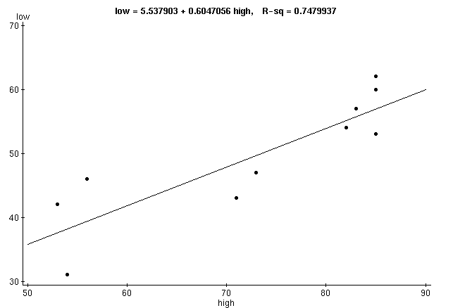

Stat 2000, Homework 5, Question 1 h) - Solution
Simple linear regression results:
Dependent Variable:low
Independent Variable:high
Sample size: 10
Correlation coefficient: 0.8649
Estimate of sigma: 5.0653124
| Parameter |
Estimate |
Std. Err. |
DF |
T-Stat |
P-Value |
| Intercept |
5.537903 |
9.16283 |
8 |
0.6043878 |
0.2812 |
| high |
0.6047056 |
0.1240954 |
8 |
4.872909 |
0.0006 |

| X value |
Pred. Y |
s.e.(Pred. y) |
95% C.I. |
95% P.I. |
| 60.0 |
41.82024 |
2.2471206 |
(36.63837, 47.00211) |
(29.041784, 54.598694) |
When rounded to 3 or 4 decimal digits, all WebStat results
should be identical to our hand calculations.